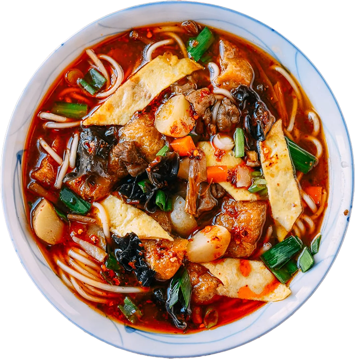

Recipe for Qishan Saozi noodles
Kevin -- thinking of a description here maybe about why this is your personal favorite. Idk if you would want to provide me with some copy.
Ingredients
For the Meat Sauce
- 1/4 cup oil (any neutral oil, such as vegetable or canola oil)
- 1 cinnamon stick
- 3 star anise
- 3 dried bay leaves
- 2 tablespoons ginger (minced)
- 1 pound pork belly or boneless country ribs (cut into 1/2-inch pieces)
- 1 teaspoon salt
- 2 tablespoons Sichuan chili flakes (or to taste)
- 1/4 cup Shaoxing wine
- 1 1/2 teaspoons five spice powder
- 2 tablespoons light soy sauce
- 1/3–1/2 cup Chinese black vinegar
- 2 teaspoons sugar
For the Egg Omelette
- 1/2 teaspoon cornstarch
- 2 teaspoons water
- 1 large egg
- 1 tablespoon oil
For the Soup Base and Noodles
- 2 tablespoons oil
- 1 tablespoon ginger (minced)
- 1/2 cup carrot (diced into 1/2-inch cubes)
- 2/3 cup potato (diced into 1/2-inch cubes)
- 1 1/2 cups rehydrated wood ear mushrooms (10g dried; rinsed and torn into small pieces after reconstituting)
- 1/4 cup rehydrated dried lily flowers (cut into 1-inch pieces)
- 1 tablespoon oyster sauce
- 8 cups homemade chicken stock (alternatively, 4 cups chicken stock and 4 cups water)
- 8 fried soy puffs (cut into quarters)
- Salt (to taste)
- 5 servings thin wheat noodles (or rice noodles for a gluten-free option)
- 1/3 cup garlic chives (cut into 1/2-inch pieces)
- 1 scallion (finely chopped)
- Homemade chili oil (optional, to taste)
Instructions
Make the Meat Sauce
- Heat 1/4 cup oil in a wok over low heat. Add the cinnamon stick, star anise, and bay leaves. Infuse the oil for 2 minutes, or until you can smell the aroma of the spices. Take care not to burn them.
- Add the ginger and pork. Cook over medium heat until the pork turns opaque. Follow with the salt and chili flakes. Keep cooking for 5 more minutes, stirring occasionally.
- Add the Shaoxing wine, five spice powder, light soy sauce, 1/3 to 1/2 cup black vinegar (more or less depending on your taste preferences), and sugar. Stir well. Reduce the heat slightly and cook for 5–6 minutes, until the sauce reduces. Remove from the heat. Discard the cinnamon, star anise, and bay leaves.
Prepare the Egg Omelette
- Heat a 10-inch nonstick pan over medium heat. In a small bowl, mix together 1/2 teaspoon cornstarch with 2 teaspoons water until combined. Crack 1 egg into the bowl and beat everything together until well combined.
- When the pan is hot, spread 1 tablespoon oil evenly around the pan to coat. Pour in the egg and immediately swirl it around to completely cover the pan. Cook until the egg is just set. Flip it and cook for another 10–20 seconds. Transfer to a cutting board and cut into 1-inch pieces.
Make the Soup Base and Assemble
- Bring a large pot of water to a boil to cook the noodles. Keep the boiling water covered and at a low simmer while you make the soup base.
- In a wok, heat 2 tablespoons oil over medium heat. Add the ginger and fry for 30 seconds. Add the carrot and potato, and cook for 5 minutes, stirring periodically. They will take the longest to cook.
- Add the wood ears, rehydrated lily flowers, and oyster sauce. Cook for 3 minutes.
- Add the chicken stock, soy puffs, and the meat sauce you made earlier. Bring everything to a boil. Add salt (and/or more vinegar) to taste. Once the soup base boils, reduce the heat to low, cover, and simmer for 10 minutes.
- As the soup simmers, cook the noodles according to package instructions. Noodles are always best a little chewy or al dente. The key is timing the noodles alongside the soup base.
- Once the noodles are cooked, drain and divide into individual serving bowls. Ladle over the soup base. Top with the egg slices, diced garlic chives, a pinch of scallions, and chili oil if desired. Serve immediately!
